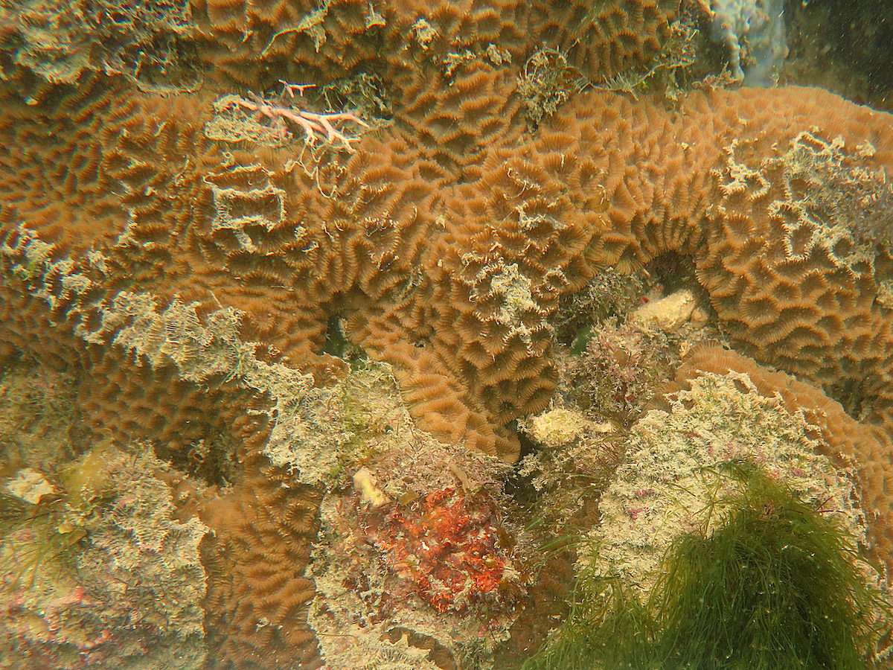
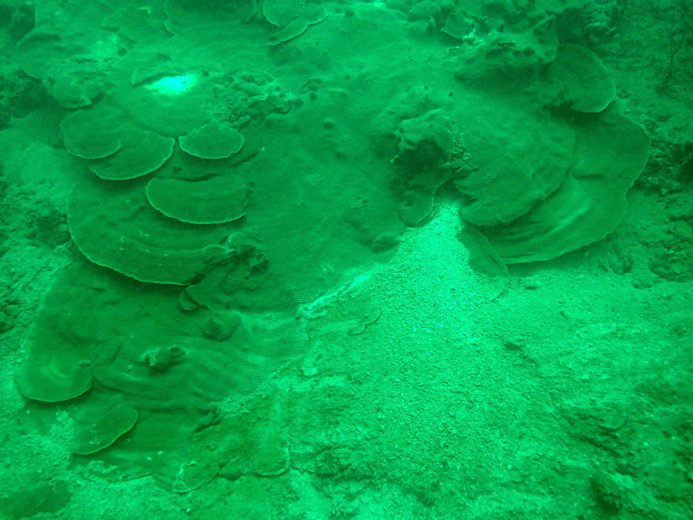
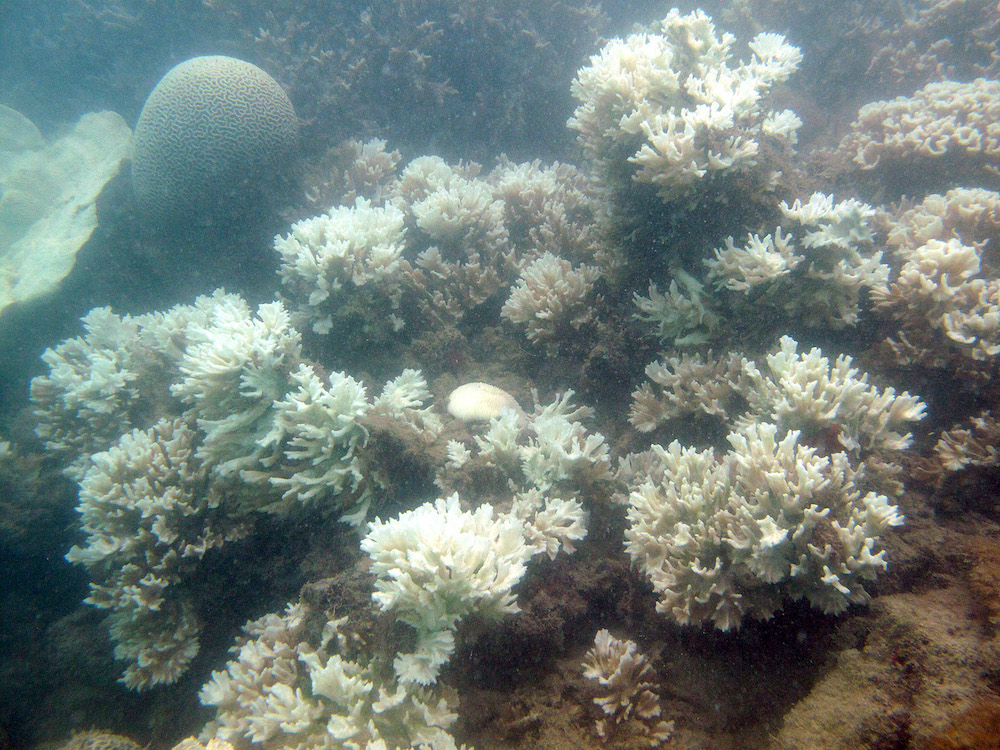
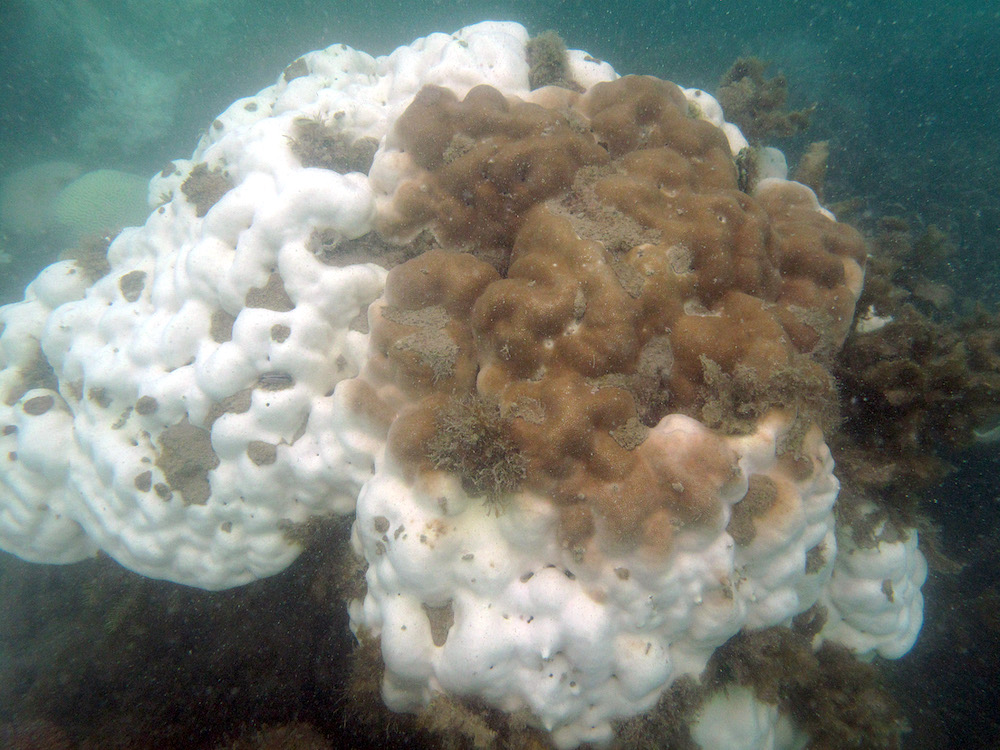

Sedimentation
The most significant cause of coral reef degradation in Singapore is sedimentation. Land reclamation, dredging of shipping channels and dumping of earth spoils, have increased the sediment load on reefs over the past six decades. Loss of coral reefs to land reclamation have occurred along the southern coast of the mainland and on several of the offshore southern islands.
Increased sedimentation has affected the remaining reefs in two ways, by (1) causing a slow but steady reduction in live coral cover, and (2) shallowing the lower depth limit of coral growth on reef slopes. Surveys since 1986 indicate that live coral cover has decreased by up to 20% on some reefs, although other reefs register no impact. The reduction in light penetration has furthermore reduced the lower depth limit of coral growth. In the 1970s and early 1980s, coral growth extended to depths of up to 10 m along the reef slope. Today, reef and coral growth is restricted to shallower than 8 m.

Coral colony damaged by settled sediment.
The high turbidity of our waters restricts light penetration, and reef life ends at a depth of only 10 m, marking the lower growth limit for reef-building corals. Sedimentation rates ranged from 3 to 6 mg cm-2 day-1 in 1979. In 1994, rates increased to 5-45 mg cm-2 day-1 (higher values from localised areas close to reclamation projects). This reduced visibility from 10 m in the 1960s to 3 m or less today. As a consequence, reefs here are very compact vertically, as opposed to reefs in clear waters, which can be found at depths of 20 m and more.

Coral growth at depth restricted by high sedimentation and low light.
Given the limited visibility in local waters, one might expect rising sea levels to also impact coral populations here. Rising waters decrease the amount of light available at the lower reef slopes that drives coral diversity and community structure. Surprisingly, as corals on Singapore’s lower reef slopes have been found to mostly be adaptable generalists, they are unlikely to be impacted by light limitation from sea level rise.
Climate change
As with coral reefs around the world, Singapore reefs suffered mass bleaching events in 1998, 2010 and 2016, during the global coral bleaching event that extended from 2014 to 2017.

Corals bleaching in 2016.
In 1998, sea temperatures around Pulau Hantu and St John's Island were elevated by 1-2 °C from March to June. 50-90% of benthic reef organisms in Singapore were affected, particularly the hard corals, soft corals and sea anemones. The bleaching extended from the shallows to 6 m, the lower depth limit for coral growth locally. Sea temperatures returned to normal in August 1998. A study of the stressed colonies undertaken during this period showed that 10 out of 35 coral colonies died from the stress. Other colonies showed various signs of stress, such as growth of turf algae and silt accumulation, leading to partial mortality.
The bleaching event in 2010 had a less severe impact on corals in Singapore compared with other regions. While about two-thirds of colonies bleached, most corals recovered rapidly. Interesting, coral species that were usually most affected did not suffer mortality. Overall, less than 10% of corals died and there was no significant change in coral community structure from the 2010 bleaching event.
The global-scale coral bleaching event in 2016 was severe, but also the most well-studied for Singapore reefs. In early April 2016, the sea surface temperature exceeded the maximum monthly mean of 29.8 °C for 3.5 months and peaked at 31.4 °C in May, with temperatures higher than the bleaching threshold (30.8 °C) for 10 days. Consequently, Singapore’s reefs showed moderate to severe bleaching (42% to 66%) across subtidal sites and at all intertidal sites surveyed. However, bleaching prevalence varied widely among sites, and was best explained by coral composition at each site. While some sites were minimally impacted, others showed declines in coral cover and community changes until a year later. The interaction between local conditions and coral composition strongly affected bleaching outcomes. It was also found that the endosymbiont communities suffered diversity declines, indicated by the homogenisation of Symbiodiniaceae composition within a coral species.

Coral bleaching in 2016.
Oil spills
Accidental oil spills remain an ever-present threat. The Singapore Strait is considered a hotspot for oil spills, with at least eight major spills since 1972. Oil components can both toxify the water and combine with sediment to smother coral. Interestingly, the 1997 Evoikos oil spill (27,000 tonnes) did not seriously affect coral reefs, although oil contaminated the upper parts of some reef flats.
Recreational activities
Other activities that also have an impact on the reefs include recreational and tourist-related use. Negligent or inexperienced divers without proper buoyancy control leave a trail of broken corals. Anchor damage is caused by fishing boats and pleasure craft.